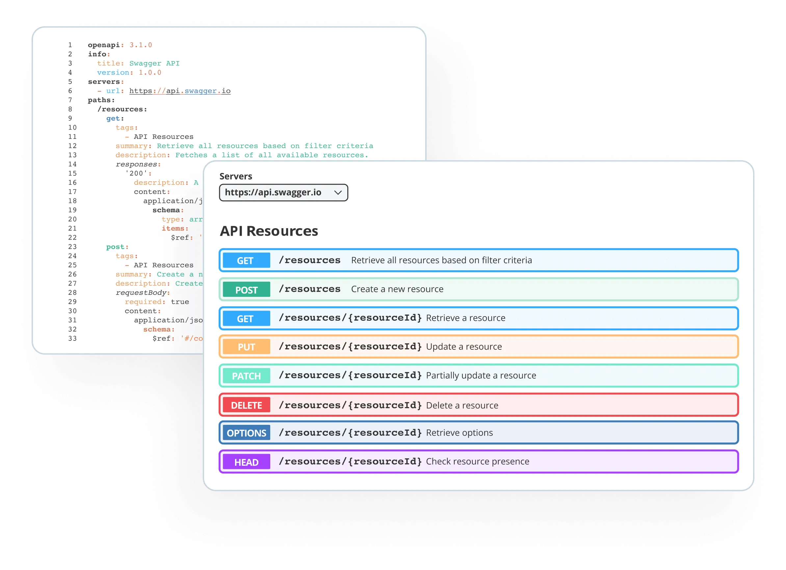

Clean Architecture in .NET 8
Hoe je een schaalbare, testbare applicatie structuur opzet met de nieuwste .NET 8 features en best practices.
Meer dan 20 jaar ervaring in .NET development • Van enterprise applicaties tot moderne cloud-native solutions
Ervaren in het bouwen van robuuste, schaalbare applicaties met de nieuwste .NET technologieën en best practices.
Ontwerp van enterprise-grade systemen met focus op onderhoudbaarheid, performance en schaalbaarheid.
Azure en cloud-native solutions, van microservices tot serverless architecturen en DevOps workflows.
Integratie van AI en machine learning in bedrijfsapplicaties voor slimmere, data-gedreven oplossingen.

RESTful APIs, GraphQL en real-time communicatie met SignalR voor moderne, connected applicaties.

Expert in SQL Server, Entity Framework en NoSQL databases voor optimale data-architecturen.
Hoe je een schaalbare, testbare applicatie structuur opzet met de nieuwste .NET 8 features en best practices.
Van monoliet naar microservices: praktische gids voor het bouwen van cloud-native applicaties in Azure.
OpenAI GPT, Azure Cognitive Services en custom ML modellen integreren in je .NET applicaties.
Concrete technieken voor het optimaliseren van API performance: caching, async patterns en memory management.
Complete setup voor automated testing, building en deployment van .NET applicaties naar Azure.
Praktische voorbeelden van SOLID principles in C# met real-world code samples en refactoring technieken.
Meer .NET development artikelen en tutorials
Bekijk .NET Artikelen